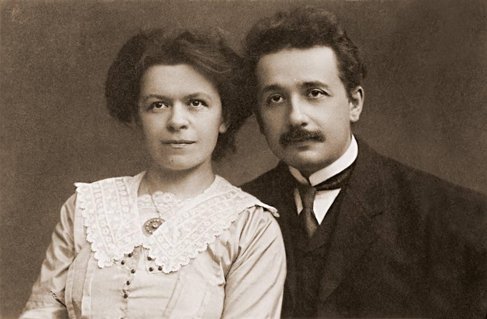

Mileva Maric y Albert Einstein, construyeron una relación amorosa e intelectual mientras estudiaban en la universidad, basada en su pasión compartida por la física, la música y la admiración del uno por el otro.
Una breve línea de tiempo de la vida de Mileva
- 1875 - Nació en Titel, en la provincia de Vojvodina, entonces parte del Imperio austrohúngaro (actualmente en Serbia)
- 1881 - Estudió en el colegio para niñas de Novi Sad para poder continuar sus estudios de educación secundaria y, después matricularse en la universidad, su padre solicitó un permiso especial: a las chicas no se les permitía asistir a las clases de este nivel educativo, ya que estaban reservadas para el sexo masculino.
- 1888 - Estudió en el instituto secundario de Sremska Mitrovica, que contaba con un excelente laboratorio de Física y Química (Trbuhovic-Gjuric 1983), donde se graduó en 1890 obteniendo la máxima calificación en matemáticas y física
- 1896 - Ingresó en el Instituto Politécnico de Zúrich, y conoció a Einstein, quien comenzaba sus estudios ese mismo año.
- 1901 - Se quedó embarazada en 1901 sin estar casados, lo que provocó una situación social complicada que le llevó a abandonar sus estudios a pesar de que solo le faltaba superar el examen final de su doctorado. Dio a luz en enero de 1902 a Lieserl Einstein, la cual se cree falleció de escarlatina al año de nacer, aunque otras teorías especulan que fue dada en adopción.
- 1903 - Se casaron ella y Einstein.
- 1904 - Ya dentro de su matrimonio nació Hans Albert Einstein, quien luego sería profesor de Ingeniería Hidráulica en la Universidad de California en Berkeley (California).
- 1910 - Dió a luz a su segundo hijo, Eduard Einstein, que nació enfermo y requirió cuidados especiales, de los que su madre se hizo cargo, lo que aparentemente produjo un alejamiento entre la pareja.
- 1914 - Se separan de Einsetin a causa de la guerra.
- 1919 - Se divorciaron a causa de infidelidad por parte de Einstein y se comprometió a ceder parte de la dotación económica del Premio Nobel de Física a Marić, acontecimiento que sucedió en 1921. Marić agotó el dinero en atención médica para su hijo Eduard, quien padecía esquizofrenia.
- 1948 - Falleció en el hospital de Zúrich el 7 de agosto de 1948 de una embolia y fue enterrada en el cementerio de Friedhof Nordheim como Mileva Maria Einstein.